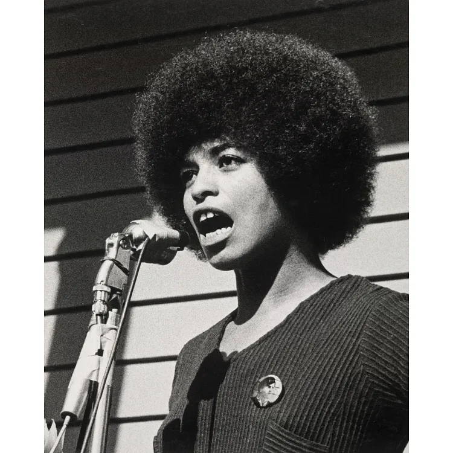

Raza, Clase y Género como Categorías de Constitución Ontológica
Un análisis crítico de la obra de Angela Davis
El feminismo burgués del siglo XIX definió el ser "Mujer" bajo atributos esenciales como la delicadeza, la sumisión doméstica y la pureza moral. Davis deconstruye este universalismo revelando que estas características dependían de una estructura material e imperialista de exclusión.
¿Cómo operan los sistemas de dominación? No se trata de opresiones acumulativas, sino de fuerzas constitutivas. La raza y la clase no "adornan" el género: reconfiguran ontológicamente el estatus de la humanidad de los sujetos.

Bajo el sistema esclavista, el cuerpo de la mujer negra sufrió una violencia de des-generización:
En las chozas de las plantaciones, donde el opresor no podía reclamar la plusvalía del trabajo doméstico de forma inmediata, se gestó un milagro social. El trabajo reproductivo (cocinar, zurcir, curar) no era opresivo, sino la única labor con significado humano real para la supervivencia comunitaria.
Dado que el dominio masculino estaba desautorizado por el amo (pues todos eran iguales bajo el látigo), los hombres y mujeres esclavos forjaron una división del trabajo horizontal y no jerárquica. Se transformó la "igualdad negativa" de la opresión en una "igualdad positiva" de resistencia afectiva.
Las mujeres blancas de clase media en el siglo XIX comenzaron a conceptualizar su propia opresión doméstica utilizando el término "esclavitud". Esta analogía lingüística fue útil para movilizar la conciencia colectiva, pero albergaba un profundo sesgo epistémico.
Equiparar el matrimonio burgués con las plantaciones invisibilizaba que el ocio doméstico y el estatus civil de la mujer blanca estaban materialmente subsidiados por la absoluta expropiación económica de la mujer negra y obrera.
He arado, he sembrado y he cosechado en los graneros... ¿Y acaso no soy una mujer? Podía trabajar tanto como un hombre, y comer tanto como él cuando tenía comida... ¡y también soportar el látigo! ¿Y acaso no soy una mujer?— Sojourner Truth, Akron (1851)
Este discurso no es solo retórica emocional; es una **intervención deconstructiva**. Truth destruye el fundamento biológico de la fragilidad femenina de la época, demostrando que su cuerpo es simultáneamente "fuerte" para el trabajo y "sufriente" para el dolor, rompiendo el monopolio blanco de la feminidad.
La libertad de las mujeres es una abstracción conceptual vacía si no desmantela de forma simultánea el racismo y la explotación capitalista.
Las mujeres negras legaron un modelo de feminidad basado en el trabajo duro, el tesón y la insistencia radical en la igualdad sexual.
Las opresiones no se suman; actúan dialécticamente. La deconstrucción del poder exige atacar la raíz sistémica unificada.